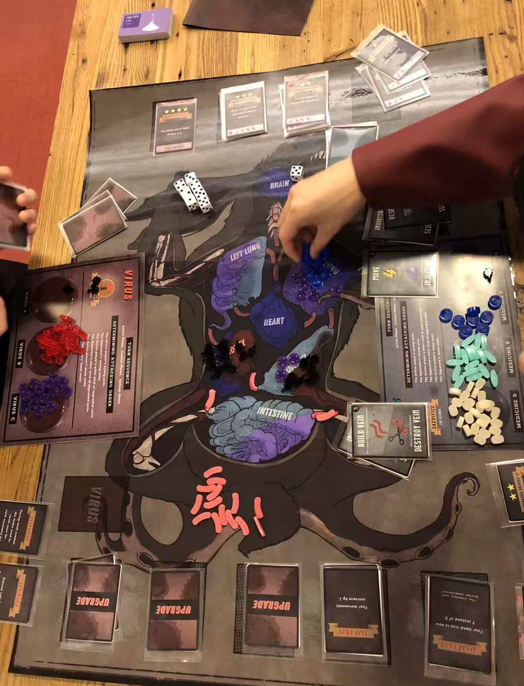

Sacrifice for Science
SACRIFICE FOR SCIENCE is an asymmetric two-player board game where players take the role of either the Virus or the Medic and fight against each other to take control of the alien creature. The goal of the Virus is to take control of the brain and heart of the creature or survive until the Medic’s deck runs out of cards. While the goal of the Medic is to eradicate the Virus from the creature or to fully understand the Virus by achieving the major breakthrough.
View project →